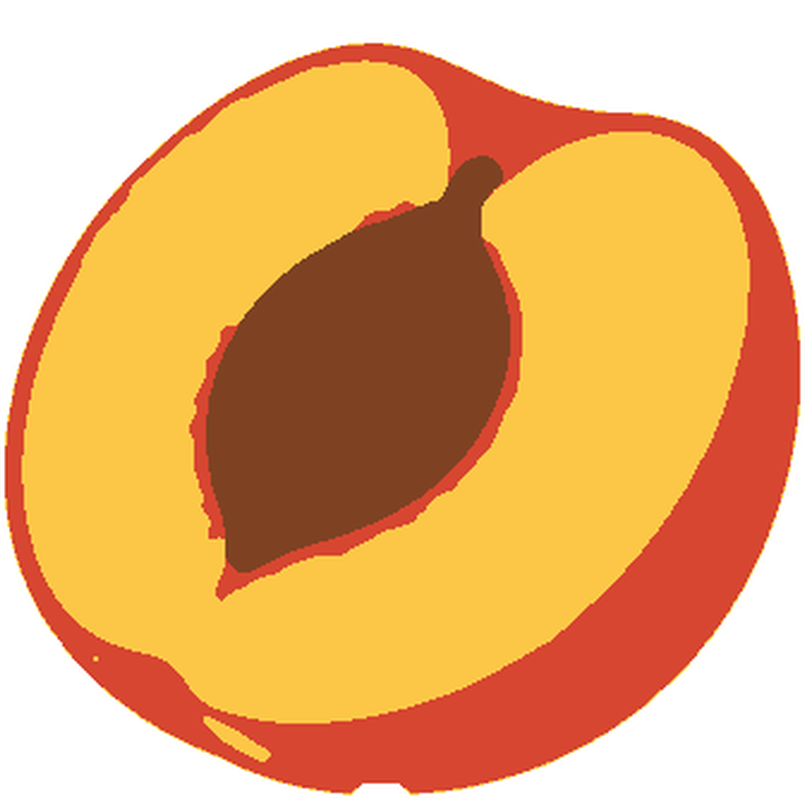

Produktionsansicht mit Motivspoiler. Technische Zertifizierung, Motivqualität und redaktionelle Freigabe sind getrennt. Motiv-/Spielabnahme: offen.
Quelle: pfirsich-ma-r01 · Datei: MA-r01.png
Original SHA-256: e016b71b81ad31376444ad139b803513a4f669e7ca0360cb32c71cc5f6ab2f73
Normalisiert SHA-256: 7f125a58a60bff0d95f78d69d8602396e7b2c15643b1c7913387c7b65d543c26

{'alpha_below': 128, 'background': '#ffffff', 'briefing': 'Preserve the single cut peach half, upper indentation, diagonal elongated brown stone, golden flesh and orange-red rind; no rotation or stretching. Two more cells preserve diagonal stone and rind', 'crop': [0, 0, 1008, 1008], 'fit': 'exact', 'format': 'picross-image-design-v1', 'height': 32, 'mode': 'color', 'origin': 'Native AI illustration B-r01, explicitly approved; source-bound MA-r01 abstraction; see abstraction.json and provenance records.', 'palette': [{'id': 'flesh', 'rgb': '#fcc747'}, {'id': 'pit', 'rgb': '#7e4223'}, {'id': 'rind', 'rgb': '#d74630'}], 'rights': 'Created in the user commission using native image generation; no third-party reference per original brief.', 'source_id': 'pfirsich-ma-r01', 'variants': [{'id': 'area', 'method': 'area', 'threshold': 128}], 'width': 32, 'working_mode': 'faithful'}
{'format': 'PNG', 'source_size': [1008, 1008], 'source_mode': 'RGB', 'orientation': 1, 'normalized_size': [1008, 1008], 'color_treatment': 'untagged/sRGB RGB or gray interpreted as sRGB', 'icc_sha256': None, 'alpha': 'preserved, composited against design background only during rasterization'}
{'tool': 'rp3-image-1', 'pillow': '12.3.0', 'jpeg': '8.0', 'jpeg_turbo': '3.1.4.1', 'littlecms': '2.19', 'zlib': '1.3.1.zlib-ng'}
{'status': 'solved', 'proof_verified': True, 'certified': True, 'logic_hash': 'c14fc7afc7b33a7e462378bf4b89a0538803284f2a2f06eb1672749c0487c593', 'profile': {'id': 'full-line-color', 'version': 1, 'start': 'unknown', 'deduction': 'all-line-supported-values', 'search': False}, 'profile_hash': 'f63ee6c88e6baa9f6a22f386ae532482d7ffb7b9a2237867f0d7cd9960ab608f', 'steps': 123, 'line_evaluations': 187, 'elapsed_seconds': 0.06285289999868837}
Kandidat: 175bebdff64dcbf1dfde96bee9ccaaafef5ba08eee2f75b7483ffd124ebef33a
{'id': 'area', 'method': 'area', 'threshold': 128}
| Linie | Vollständige Hinweise (Länge:Farb-ID) |
|---|---|
| 1 | – |
| 2 | – |
| 3 | 1:flesh 2:rind 1:flesh 2:rind 1:flesh |
| 4 | 1:flesh 1:rind 6:flesh 3:rind |
| 5 | 10:flesh 5:rind 3:flesh |
| 6 | 11:flesh 5:rind 4:flesh 1:rind |
| 7 | 12:flesh 2:pit 1:rind 7:flesh 1:rind |
| 8 | 13:flesh 2:pit 9:flesh 1:rind |
| 9 | 11:flesh 1:rind 3:pit 10:flesh 1:rind 1:flesh |
| 10 | 10:flesh 1:rind 5:pit 11:flesh 1:rind |
| 11 | 10:flesh 8:pit 10:flesh 1:rind |
| 12 | 1:rind 8:flesh 9:pit 10:flesh 1:rind 1:flesh |
| 13 | 9:flesh 10:pit 1:rind 9:flesh 1:rind 1:flesh |
| 14 | 1:rind 7:flesh 11:pit 1:rind 9:flesh 2:rind |
| 15 | 1:rind 6:flesh 1:rind 11:pit 1:rind 8:flesh 3:rind |
| 16 | 8:flesh 12:pit 1:rind 8:flesh 3:rind |
| 17 | 8:flesh 11:pit 1:rind 9:flesh 3:rind |
| 18 | 1:rind 7:flesh 11:pit 1:rind 8:flesh 3:rind 1:flesh |
| 19 | 1:rind 7:flesh 10:pit 1:rind 9:flesh 3:rind 1:flesh |
| 20 | 1:rind 7:flesh 9:pit 1:rind 9:flesh 4:rind |
| 21 | 1:rind 7:flesh 1:rind 6:pit 2:rind 10:flesh 4:rind |
| 22 | 9:flesh 4:pit 2:rind 11:flesh 4:rind 1:flesh |
| 23 | 1:rind 7:flesh 1:pit 2:rind 13:flesh 5:rind |
| 24 | 1:rind 22:flesh 5:rind 1:flesh |
| 25 | 1:rind 20:flesh 6:rind |
| 26 | 1:flesh 1:rind 18:flesh 6:rind |
| 27 | 4:rind 13:flesh 7:rind |
| 28 | 1:flesh 3:rind 10:flesh 8:rind |
| 29 | 1:flesh 4:rind 5:flesh 10:rind |
| 30 | 1:flesh 1:rind 1:flesh 13:rind 1:flesh |
| 31 | 1:flesh 11:rind 1:flesh |
| 32 | 2:flesh 2:flesh |
| Linie | Vollständige Hinweise (Länge:Farb-ID) |
|---|---|
| 1 | 2:flesh 4:rind 1:flesh |
| 2 | 1:flesh 2:rind 7:flesh 2:rind |
| 3 | 1:flesh 1:rind 12:flesh 1:rind 1:flesh |
| 4 | 16:flesh 2:rind |
| 5 | 18:flesh 1:rind 1:flesh |
| 6 | 19:flesh 2:rind 1:flesh |
| 7 | 20:flesh 3:rind |
| 8 | 22:flesh 2:rind 1:flesh |
| 9 | 10:flesh 1:rind 5:pit 1:rind 7:flesh 2:rind |
| 10 | 10:flesh 10:pit 5:flesh 1:rind 2:flesh |
| 11 | 1:rind 8:flesh 10:pit 1:rind 6:flesh 2:rind |
| 12 | 9:flesh 11:pit 1:rind 6:flesh 2:rind |
| 13 | 1:rind 7:flesh 12:pit 7:flesh 2:rind 1:flesh |
| 14 | 1:rind 6:flesh 1:rind 11:pit 1:rind 7:flesh 2:rind 1:flesh |
| 15 | 7:flesh 12:pit 1:rind 7:flesh 2:rind |
| 16 | 1:rind 5:flesh 1:rind 11:pit 1:rind 7:flesh 3:rind |
| 17 | 1:rind 5:flesh 12:pit 1:rind 7:flesh 3:rind 1:flesh |
| 18 | 1:flesh 1:rind 4:flesh 11:pit 1:rind 8:flesh 3:rind 1:flesh |
| 19 | 3:rind 12:pit 1:rind 8:flesh 4:rind |
| 20 | 3:rind 2:pit 2:flesh 6:pit 2:rind 9:flesh 4:rind |
| 21 | 3:rind 5:flesh 4:rind 10:flesh 5:rind |
| 22 | 2:rind 20:flesh 4:rind 1:flesh |
| 23 | 2:rind 19:flesh 5:rind |
| 24 | 20:flesh 5:rind 1:flesh |
| 25 | 19:flesh 6:rind |
| 26 | 18:flesh 6:rind |
| 27 | 16:flesh 6:rind |
| 28 | 1:rind 13:flesh 7:rind |
| 29 | 1:rind 10:flesh 8:rind |
| 30 | 2:rind 5:flesh 9:rind 1:flesh |
| 31 | 1:flesh 12:rind 1:flesh |
| 32 | 2:flesh 4:rind 2:flesh |